Auto Close Tag
Одно из самых важных расширений, которое автоматически добавляет закрывающий тег. Не требует никаких команд для активации. По умолчанию Auto Close Tag доступно в VSCode.
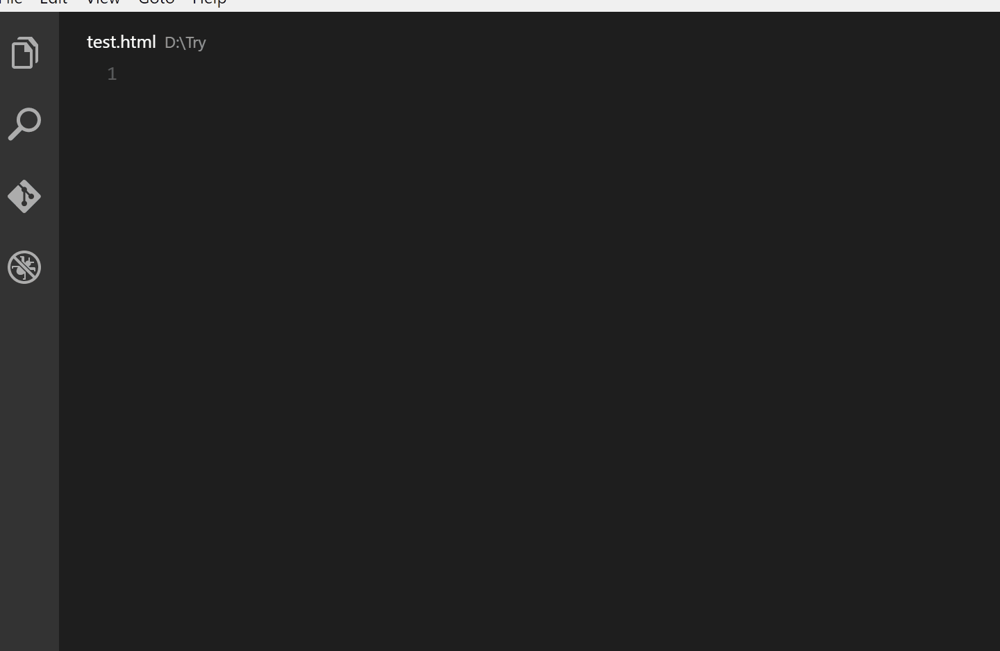Auto Rename tag
Если нужно поправить тег "button" на "a", изменяем первый — открывающий — тег, а второй поменяется автоматически.
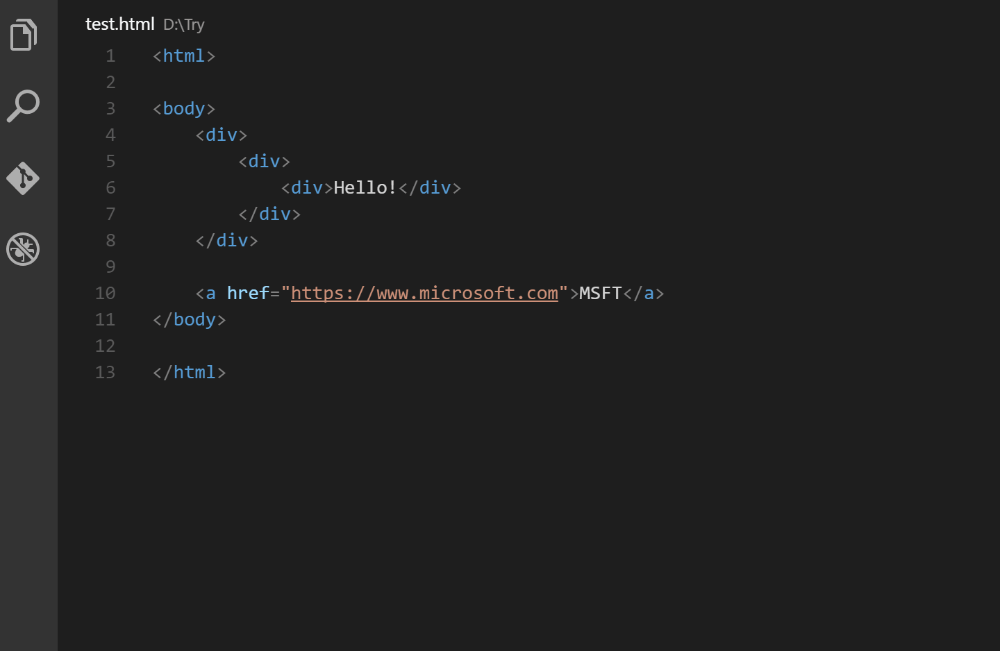Beautify
Функция расширения — превратить некрасивый файл без пробелов и символов табуляции, где каждый тег идёт сразу после предыдущего, в более читабельный и красивый.
Чтобы использовать это расширение, сначала нужно нажать F1. Затем в строке написать «Beautify» и выбрать его из списка — код автоматически исправится.
Bracket pair colorizer
Это расширение придаёт каждой паре групп свой цвет — можно быстро и легко найти нужную пару.
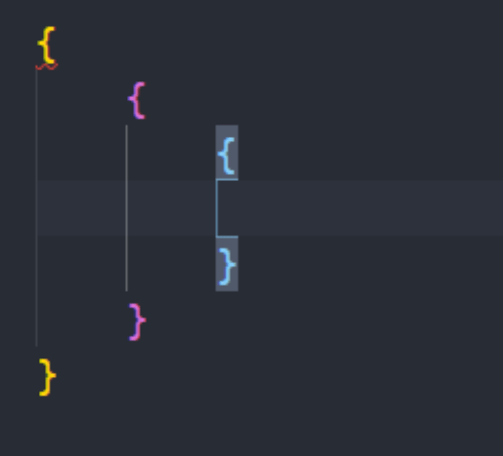ESLint
ESLint статически анализирует код для быстрого поиска проблем, которые может автоматически скорректировать.
Когда расширение определяет проблему, она отмечается красным подчёркиванием. И проблему можно легко исправить самостоятельно.
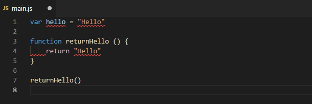JavaScript (ES6) code snippets
Одно из классных расширений для JavaScript. Когда пишете что-то в своём коде и забываете, как вызывается функция, расширение автоматически предложит её записать — нужно будет просто нажать Enter.
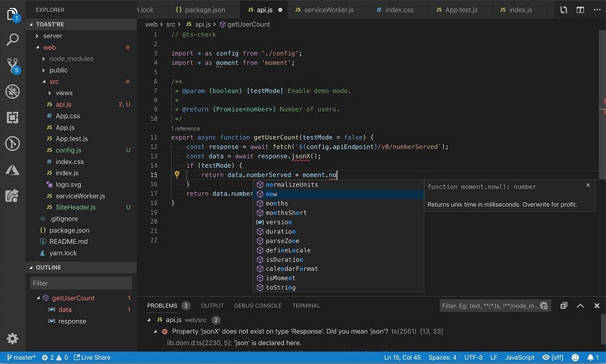Kite
Kite делает почти то же самое, что и предыдущее расширение JavaScript (ES6) code snippets. Нейронные сети, которые используются в этом расширении, помогают быстрее писать код.
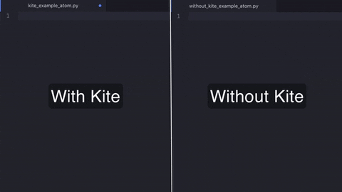Слева — ввод символов с использованием расширения Kite, справа — без него
Live Server
При написании или коррекции HTML-, CSS- или JavaScript-файла нажатие команды «Go Live» в нижней части окна VSCode позволит автоматически добавить изменения на веб-страницу без перезагрузки и других действий.
.gif)
Material Icon Theme
Расширение добавляет иконки к файлам и папкам в верхней части окна VSCode, что позволяет легко ориентироваться в них.
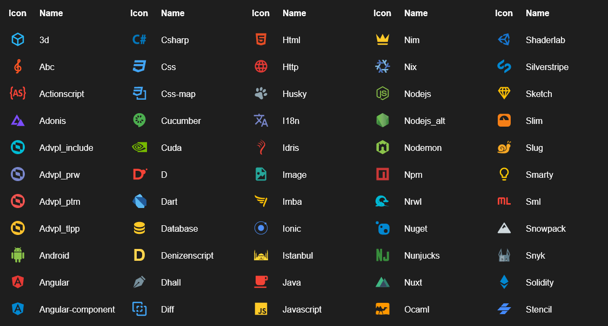One dark pro
Ещё одно расширение, которое сделает рабочее пространство VSCode более удобным и красивым. Оно меняет стандартную тему на новую красивую.
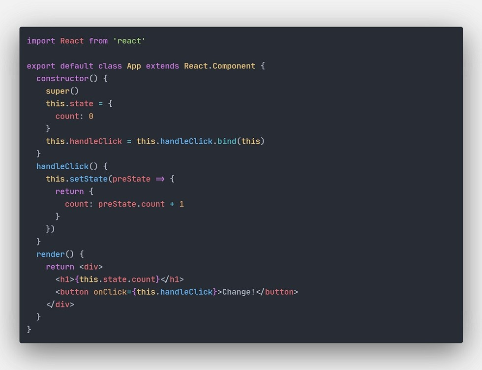Open In Browser
Это простое расширение, которое позволяет открывать файлы прямо в браузере.
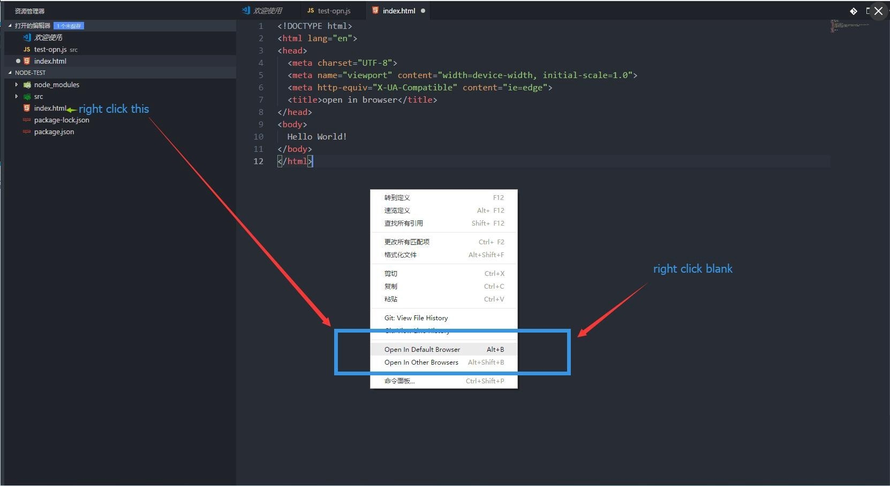Path Intellisense
Если нужно прописать путь в теге «href» или «src», расширение предоставит путь к уже существующему файлу.
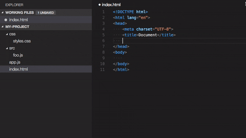Settings Sync
Последнее расширение — самое важное. Оно синхронизирует настройки в VSCode с учётной записью Google, Github и другими, и при удалении VSCode ничего страшного не произойдёт.
С недавних пор расширение встроено в VSCode.
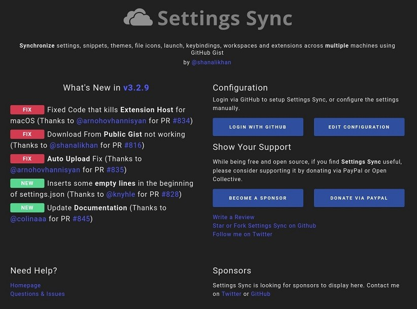